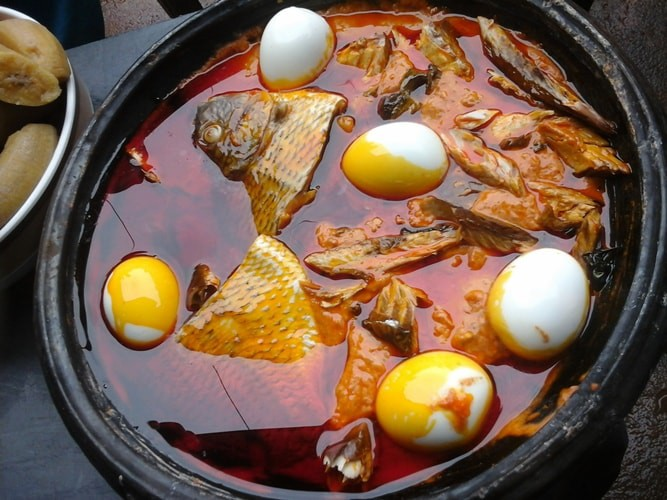
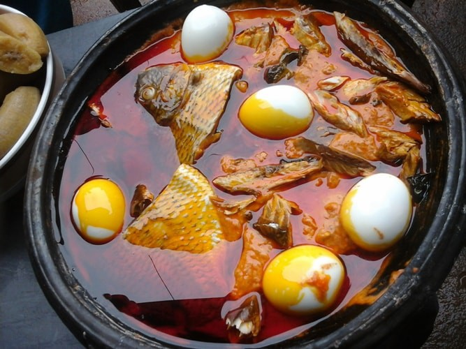
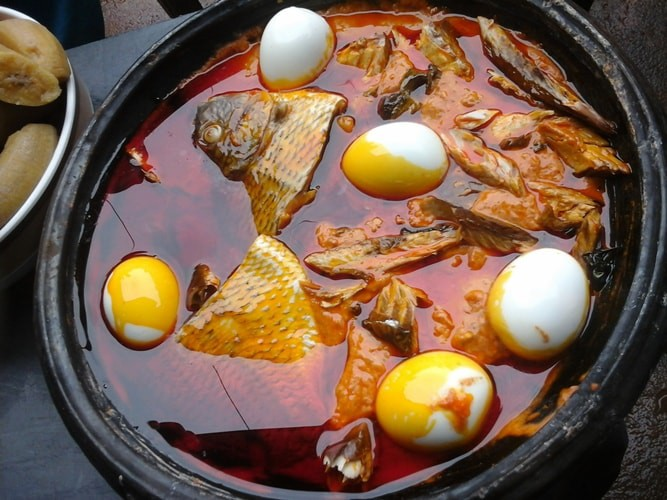

The continent of Africa is the second-largest landmass on Earth, and is home to hundreds of different cultural and ethnic groups. This diversity is also reflected in the many local culinary traditions in terms of choice of ingredients, style of preparation, and cooking techniques.

Below are links to the sites of notable restaurants in africa where you can have delicious meals served to you.